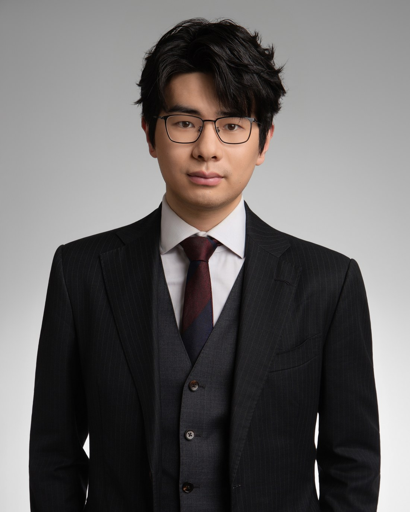
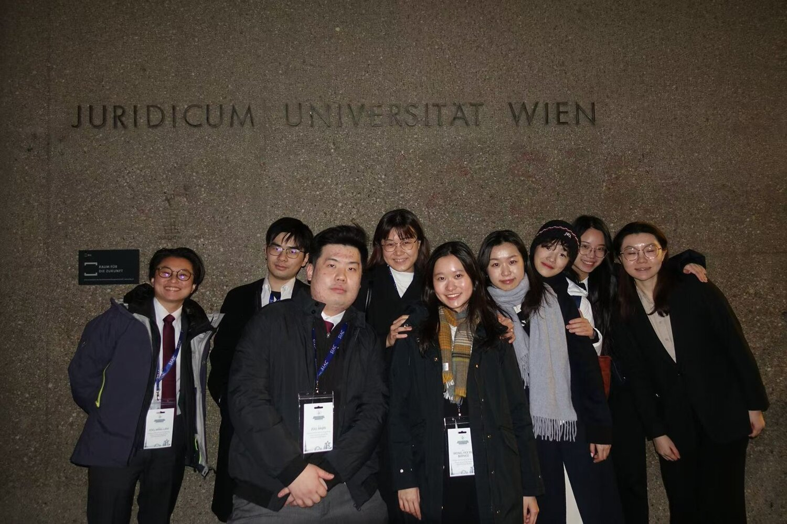
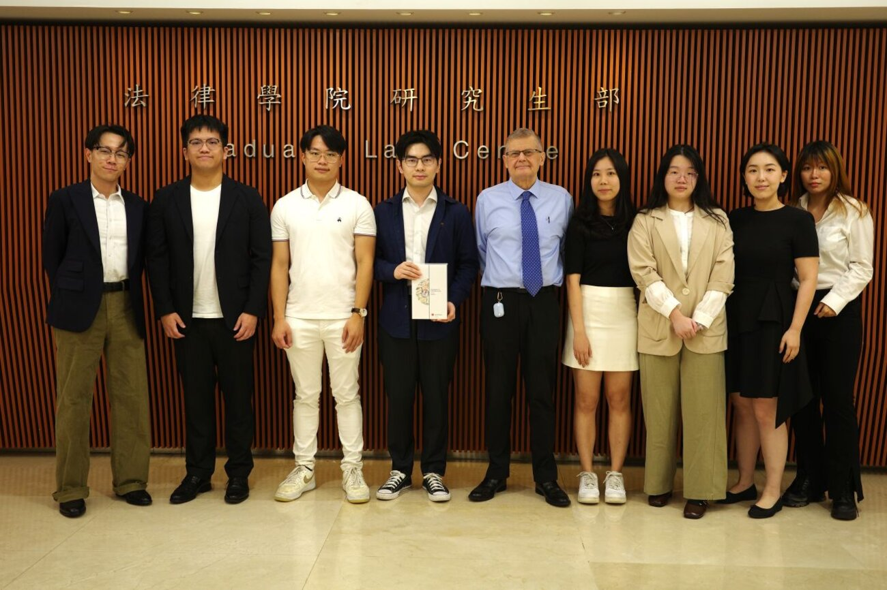

Zhiyuan
(Eric) Lin
林志远
Future Trainee Solicitor at Withers · Juris Doctor candidate · Qualified PRC Lawyer. Withers 未来执业律师 · 香港中文大学法律博士（JD）候选人 · 中国执业律师。
Building a career at the intersection of Chinese and international law — across capital markets, cross-border transactions, and dispute resolution. 深耕中国法与国际法的交汇——横跨资本市场、跨境交易与争议解决。

A lawyer between two legal worlds.游走于两个法律世界之间。
Eric is a future Trainee Solicitor at Withers and a Juris Doctor candidate at The Chinese University of Hong Kong. A qualified PRC lawyer, he is building a career at the intersection of Chinese and international law — earning distinctions such as the Linklaters Making Links Scholarship and the Freshfields Community Investment Award along the way. 林志远（Eric）是 Withers 的未来执业律师，香港中文大学法律博士（JD）候选人，并已取得中国法律职业资格。他立志在中国法与国际法的交汇处建立自己的事业，曾获 Linklaters Making Links 奖学金、Freshfields 社区投资奖等荣誉。
He has gained hands-on experience in capital markets, cross-border transactions, and dispute resolution at leading US, UK, and Chinese law firms. He is also an accomplished international mooter and debater — competing against Oxford, Duke, and LSE, and transforming an under-resourced student club into a nationally ranked team behind an event that drew over 500,000 viewers. 他在美、英、中顶尖律所积累了资本市场、跨境交易与争议解决的一线经验；同时是出色的国际模拟法庭辩手，曾与牛津、杜克、伦敦政经同台竞技，并以创业精神将一支资源有限的学生社团打造为全国排名的队伍，策划的赛事吸引超过 50 万人次观看。
Education & Qualifications教育背景与执业资格
Education教育
Qualifications & Bar执业资格
- Qualified PRC Lawyer中国执业律师PRC Legal Professional Qualification (PRC Bar)已通过国家统一法律职业资格考试
- Future Trainee Solicitor — WithersWithers 未来执业律师（Trainee Solicitor）Training contract secured · Hong Kong已获 Training Contract · 中国香港
- PCLL — CUHKPCLL — 香港中文大学Postgraduate Certificate in Laws · Admitted 2026–27 (UGC-funded)法律深造证书 · 已获录取 2026–27（UGC 资助学额）
Honours & Awards荣誉与奖项
Six placements across leading US, UK & Chinese firms横跨美、英、中顶尖律所的实务历练
From capital markets and cross-border M&A to litigation and arbitration — work spanning Hong Kong, the Mainland, and beyond.从资本市场、跨境并购到诉讼与仲裁——足迹遍及香港、内地及海外。
An advocate's instinct, tested on the world stage在世界舞台上磨砺的辩护本能
International commercial arbitration and investment moots — written memoranda and oral advocacy against the world's leading law schools.国际商事仲裁与投资仲裁模拟法庭——书状写作与口头辩论，对阵全球顶尖法学院。
Willem C. Vis Moot (33rd)第 33 届 Vis 国际商事仲裁模拟法庭
2025–26Quarterfinalist for team orals at both Vis Vienna and Vis East. Honourable Mention, Fali Nariman Award for Best Written Memorandum for Respondent. Researched CISG Art. 8 interpretation and SIAC third-party-funding disclosure.维也纳与香港赛区团队口辩均入八强；获 Fali Nariman 最佳被申请人书状荣誉提名。研究《销售公约》第 8 条解释及 SIAC 规则下第三方资助披露义务。
FDI Moot (National & Global)FDI 投资仲裁模拟法庭（全国与全球）
2025Top 8 Global Best Teams; National First Runner-up. Led a team of eight end-to-end under the ICSID Rules and authored the core jurisdiction and merits arguments.全球最佳队伍八强，全国亚军。在 ICSID 规则下统筹八人团队全流程，并主笔管辖权与实体核心论点。
JUFE Debate Team江西财大辩论队
2021–24Secured the team's first institutional funding and elevated it from unranked to 47th nationally — competing against Oxford, Duke and LSE.为队伍争取到首笔机构经费，将其从无排名提升至全国第 47 名——并与牛津、杜克、伦敦政经同台竞技。


Beyond the black-letter law法条之外
Practice Skills实务技能
- Legal research & writing法律研究与写作
- Cross-border due diligence跨境尽职调查
- Westlaw · LexisNexisWestlaw · LexisNexis 数据库
- Transactional drafting交易文件起草
- AIGC for legal workflowsAIGC 辅助法律工作流
Languages语言
- English — fluent (working)英语 — 流利（工作语言）
- Mandarin — native普通话 — 母语
- Cantonese — conversational粤语 — 日常会话
Interests兴趣
- Debate & public speaking辩论与演讲
- Musicals & singing音乐剧与声乐
- Mountaineering登山
- Strategy & table games策略桌游
Let's start
a conversation.期待与你
开启对话。
A future Trainee Solicitor at Withers, I'm always glad to connect with peers and practitioners — for professional exchange, mooting and advocacy, or collaboration across Chinese and international law. I usually reply within a day.已确定加入 Withers 任未来执业律师。乐于与同业、师友交流——无论是专业切磋、模拟法庭与辩论，还是中国法与国际法相关的合作。通常一日内回复。